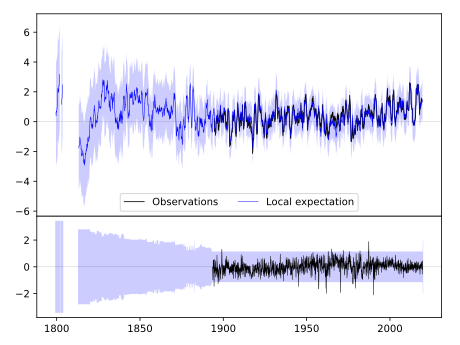
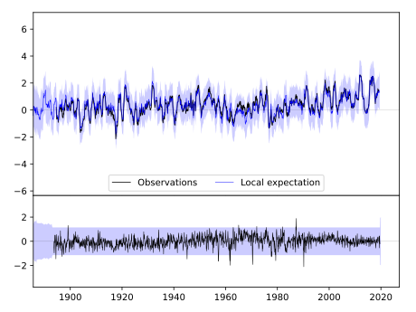
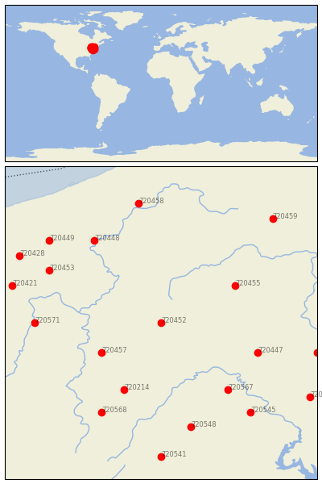

JOHNSTOWN [USA]


| Neighbour | Name | Country | Distance | Lon/Lat | Years |
|---|
| 720452 | JOHNSTOWN | USA | 0 | -78.9, 40.3 | 1893-2019 |
| 720457 | UNIONTOWN 1 NE | USA | 81 | -79.7, 39.9 | 1877-2019 |
| 720455 | STATE COLLEGE | USA | 101 | -77.9, 40.8 | 1882-2019 |
| 720214 | OAKLAND 1 SE | USA | 108 | -79.4, 39.4 | 1877-2019 |
| 720447 | CHAMBERSBURG 1 ESE | USA | 119 | -77.6, 39.9 | 1858-2019 |
| 720567 | MARTINSBURG E WV RGN | USA | 126 | -78.0, 39.4 | 1891-2019 |
| 720448 | FRANKLIN | USA | 143 | -79.8, 41.4 | 1893-2019 |
| 720571 | WELLSBURG WTR TRMT P | USA | 144 | -80.6, 40.3 | 1877-2019 |
| 720453 | NEW CASTLE 1 N | USA | 148 | -80.4, 41.0 | 1893-2019 |
| 720568 | PARSONS 1 NE | USA | 149 | -79.7, 39.1 | 1878-2019 |
| 720548 | WOODSTOCK 2 NE | USA | 159 | -78.5, 38.9 | 1893-2019 |
| 720545 | LINCOLN | USA | 168 | -77.7, 39.1 | 1893-2019 |
| 720449 | GREENVILLE 2 NE | USA | 175 | -80.4, 41.4 | 1871-2019 |
| 720421 | MILLPORT 4 NE | USA | 177 | -80.9, 40.8 | 1893-2019 |
| 720458 | WARREN | USA | 179 | -79.2, 41.9 | 1873-2019 |
| 720462 | YORK 3 SSW PUMP | USA | 184 | -76.8, 39.9 | 1840-2019 |
| 720428 | WARREN 3 S | USA | 188 | -80.8, 41.2 | 1882-2019 |
| 720541 | DALE ENTERPRISE | USA | 200 | -78.9, 38.5 | 1893-2019 |
| 720459 | WELLSBORO 4 SW | USA | 200 | -77.4, 41.7 | 1893-2019 |
| 720217 | WOODSTOCK | USA | 203 | -76.9, 39.3 | 1870-2019 |